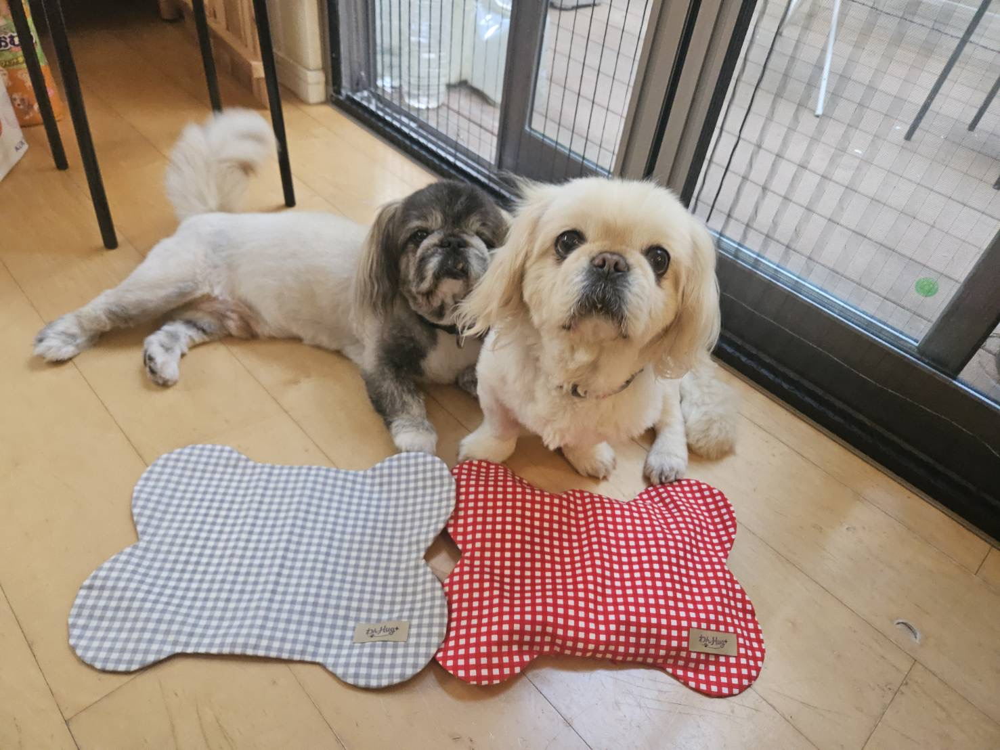
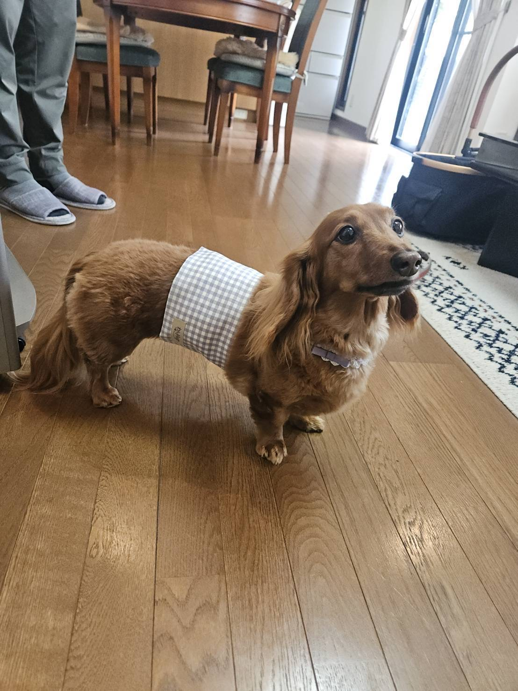
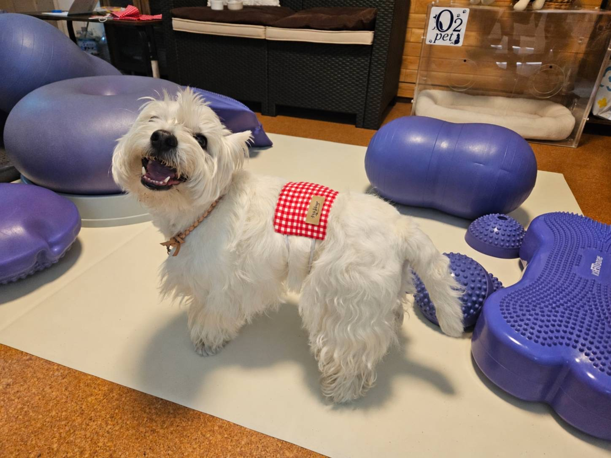

MADE FOR MOMENTS WITH YOUR DOG
A little
warmth.
A moment
together.
Meet Wanpoka. A reusable, microwaveable
rice-bran warming pack for dogs.

A small everyday ritual.
A little time, just for them.
THE LITTLE PACK
Simple ingredients.
A thoughtful
little ritual.
Warm the pack in your microwave, place it in a suitable cover and spend a little supervised time with your dog.
Not a treatment. Not a promise.
Just a way to share a warm moment.
WHAT’S INSIDE WANPOKA?
Rice bran.
Brown rice.
Salt.
Three ingredients in the original Wanpoka pack.
THEIR DAY. THEIR WAY.
Find their kind
of comfortable.
Different dogs. Different moments.
Explore three ways to pair a warming
pack with a cover.

A little warmth.
Wrapped around.
A wrap-style option to hold your Wanpoka pack. Choose the cover and pack together, with your dog’s build and intended use in mind.
Ask about the Fit Cover
A small pack.
A different fit.
A strap-style option, shown here on the back. Ask us about suitable sizing and placement for your dog. Always supervise during use.
Ask about the Active CoverStay a little.
Stay together.
A bone-shaped cover for the cushion-size pack. For supervised time together — not for unattended use or use while your dog sleeps.
Ask about the Cushion CoverWarming packs and covers are sold separately.
Need help matching them? That’s what we’re here for.
Small pack. Thoughtful choices.VIEW PACK SIZES +
Approximate dimensions of the original warming packs. Handmade sizes may vary. Please confirm pack–cover compatibility before ordering.
| Pack | Dimensions |
|---|---|
| S | 17.5 × 7 cm |
| M | 20.5 × 8 cm |
| L | 24 × 9 cm |
| Cushion | 24 × 18 cm |
MAKE IT A MINDFUL MOMENT
Warm. Check.
Stay close.
A few simple steps.
Your attention makes the difference.
- 01
Warm the pack.
Follow the instructions for your specific pack and microwave. Heating time depends on pack size and microwave power.
- 02
Check, then cover.
Check for hot spots before use. Always use a suitable cover and check your dog’s skin and comfort during use.
- 03
Be right there.
Stay with your dog. Make sure they can move away freely. Remove the pack if they seem uncomfortable.
A NOTE BEFORE YOU BEGIN
Comfort comes first.
Always.
Do not use unattended or while your dog sleeps. Prolonged heat contact can cause burns.
If your dog has a health condition, reduced sensation or difficulty moving away, ask your veterinarian before use.
Wanpoka is not a medical device and is not intended to diagnose or treat illness. Follow the product instructions every time.
LET’S FIND THE RIGHT FIT, TOGETHER.
A question?
Come say hello.
For product details or help choosing
a size or cover, contact us via
LINE or email.